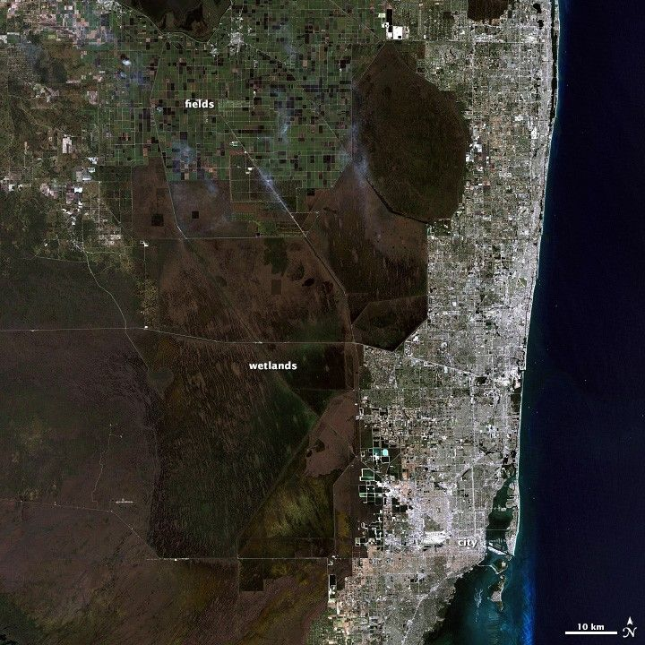
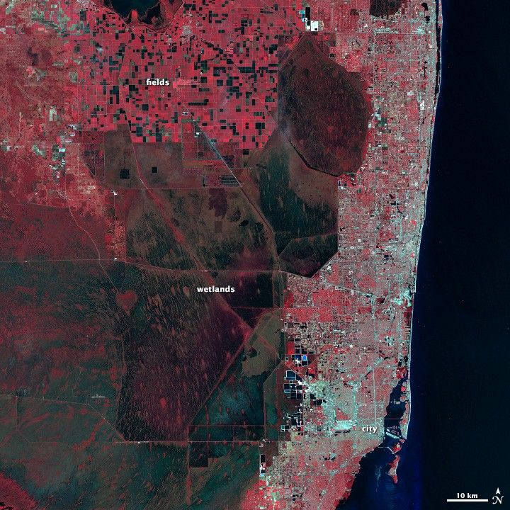
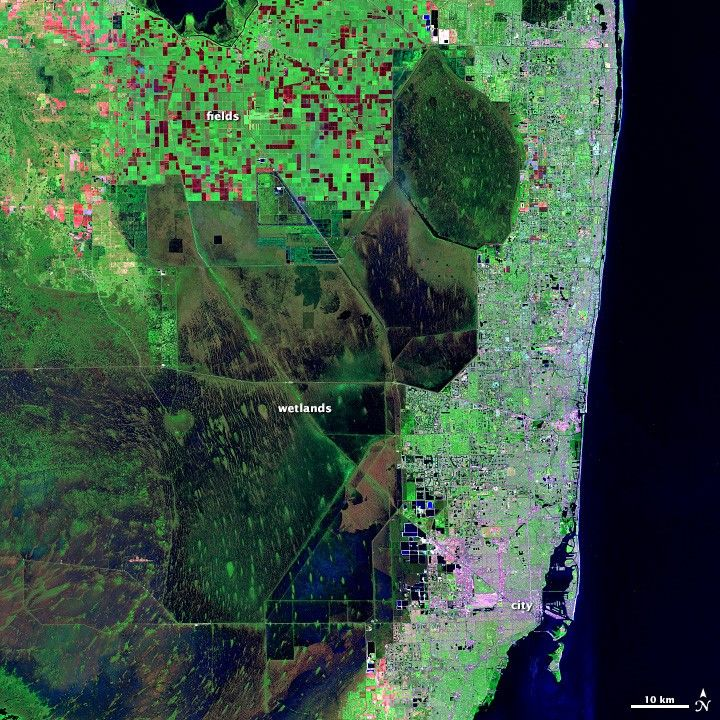
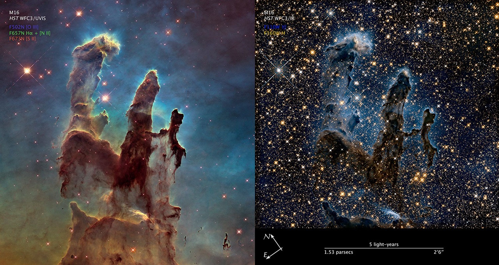

Light is information.
Can invisible light help you identify something without visiting it? Test light, examine Florida, then solve a new observation problem.
Work independently. Try first, check, and revise. Your observations are the evidence.
01 · Put light in order
Order the seven types from longest wavelength → shortest wavelength. Use each once. You can retry.
02 · Test light against matter
PhET: Molecules and Light. Choose a light type and a molecule, then click the green button on the light source to turn it on. Watch several flashes before recording. Reset or reselect the molecule between trials.
Water + microwave → carbon dioxide + infrared → carbon dioxide + visible → nitrogen + infrared → ozone + ultraviolet.
Open PhET in a new tab ↗If the box is blank or too small, use the link. Keep this assignment open; return to this tab after each trial.
PhET blocked? Use the observation cards
Teacher-provided model observations: water + microwave rotates; carbon dioxide + infrared vibrates; carbon dioxide + visible passes without change; nitrogen + infrared passes without change; ozone + ultraviolet breaks apart. Use these observations in the same table, and mark the fallback below.
This is a reading fallback, not a replacement simulation.
Model limit: PhET uses colored symbols so we can follow invisible light. Those symbols are not what our eyes would see. It tests selected wavelengths, not every possible wavelength.
03 · Use your evidence
Compare trials B and C: same molecule, different light. Then compare B and D: same light, different molecule.
A detector measures light that is reflected, emitted, or transmitted. Computers turn those measurements into images. You can learn about an object from its light without touching it.
04 · Earth from light
These are the same part of southeastern Florida. Find the fields, wetlands, city, and ocean in both. Which boundaries or patches become clearer?


Open the image key after you compare
Near-infrared → displayed red · visible red → green · visible green → blue. Plant cover strongly reflects near-infrared. Water is generally dark; cities look pale/silver. These are reflected-light data, not a temperature map.
Another lens: reveal burned fields and wetlands

Satellite measurements also help track fires, clouds, and cities. A sensor must measure the wavelengths suited to the question.
05 · Match the light fingerprints
Extension beyond the HMH lesson: compare how much light each surface reflects across several wavelength bands. Read → notice → match the whole shape.
These are simplified teaching profiles based on published NASA patterns. The curves are not measurements of pixels from the Florida image. “More” means more reflected light.
Now identify three unknown samples
Real surfaces vary. Scientists compare many bands and other evidence; one color alone is not a reliable identification.
06 · Light from space
The Pillars of Creation: one region of gas, dust, and stars; two kinds of light. Compare how many stars are visible through the pillars.

Like the HMH Andromeda examples, different wavelengths reveal different features of the same object.
Checkpoint · Choose the right explanation
Final challenge · A satellite for Florida
After sunset, a Florida team must locate wildfire hotspots, even when no flame is visible. Which detector would you recommend?
Exit idea: Light carries information our eyes cannot see. Detectors and computers let scientists collect, display, and compare that information.
Sources & teacher notes
Instructional source: HMH Florida Science, Unit 5 Lesson 1, Images from Space (pp. 256–269); Lesson 2, Technology for Space Exploration (pp. 272–285); Lesson 3, Space Exploration and Florida (pp. 288–301). Paraphrased; no textbook images reproduced. Primary benchmark SC.8.E.5.11; supporting benchmark SC.8.E.5.10. Lesson 3 supplies Florida context only, not a full SC.8.E.5.12 lesson.
- Molecules and Light — PhET Interactive Simulations, University of Colorado Boulder, https://phet.colorado.edu. Live simulation linked/embedded; not modified. PhET licensing.
- NASA Earth Observatory: interpreting false color. Florida images: NASA/Matt Radcliff using Landsat 5 data from USGS. Spectrum and reflectance artwork here is original teaching material informed by NASA's published patterns.
- NASA ARSET: agricultural remote sensing, Vegetation Spectra — basis for simplified vegetation, water, and soil profiles.
- NASA: reflected near-infrared waves — vegetation observations.
- Hubble: visible and near-infrared Pillars of Creation. NASA, ESA, and the Hubble Heritage Team (STScI/AURA). Visible mapping: [O III]→blue, Hα+[N II]→green, [S II]→red. Infrared mapping: F110W→blue, F160W→yellow.
WRAP / TURN IN